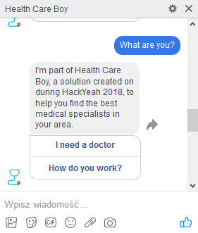

Hack Yeah 2018
Hack Yeah 2018
Task: HEALTH NEEDS MAPS
Task by: Ministry of Health
Solution submitted by Δ Delta Force Δ team:
Kacper Osiński, Szymon Grącki, Bartłomiej Zając

Health Care Boy
Problem: people wasting time and resources on a lengthy process of choosing the right doctor, waiting for an appointment, etc.
Solution: aggregating data to present a short and easy answer to the question "Which doctor should i choose?"
We achieved this by:
Collecting data about location of doctors, their specializations, times of available appointment, and reviews.
And...
Ranking the results according to the combination of three variables:
- Proximity
- Reviews
- Waiting times
UX is incredibly important in this project.
After all, we wanted people to stop losing time and effort.
So we made sure to create a crisp and juicy UI
And even added a Messenger chat bot as a second user interface. The point was to reach a wider target group and innovate.
The chatbot is available under this link: m.me/2303325646604508
Thank you and have a nice day 😎